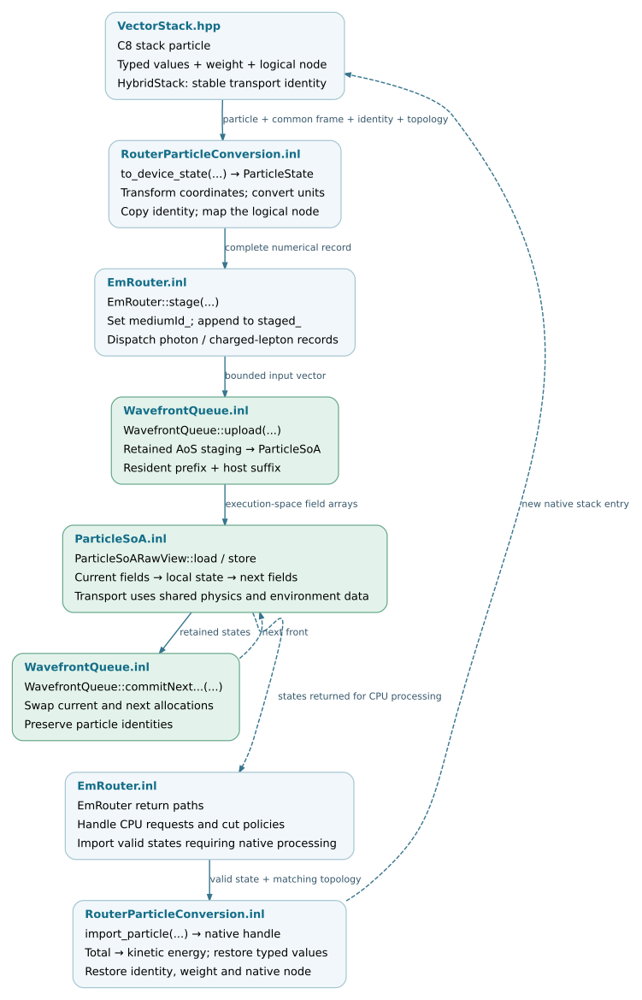

Particle data and state
The particle-data layer transfers C8 particle values into the numerical representation used by the Kokkos backend and restores returned particles to the native stack. Its contract includes energy definitions, units, coordinates, statistical weights, transport identities and logical environment nodes.
The Execution and scheduling chapter describes when particles are routed or returned. This chapter describes the data carried by those operations, the conversion interfaces and the storage used during batch execution.
Note
Source baseline: d5297c43. The production transfer path documented here is the standard resident EM backend. The general value-conversion helpers have a separate, narrower contract; they are not wrappers called by the production router.
Data representations
Representation |
Contents |
Role |
|---|---|---|
C8 particle interface and stack |
Typed physical quantities, coordinate-aware geometry, weight and node
extensions; transport identities in |
Native tracking, process execution and output interfaces. |
|
Numerical values in a common coordinate system, integer identifiers and compatibility tags. |
A value record used in host staging, transfers and local kernel work. |
|
Kokkos arrays storing the fields of many |
Batch storage in the execution space’s memory. |
|
Borrowed array addresses and strides, with device-callable
|
Kernel access to an existing allocation; no ownership or copy. |
C8’s VectorStackImpl already stores particle fields in separate vectors.
The Kokkos representation adds explicit numerical conventions and
execution-space storage; it does not introduce field-based storage to an
otherwise object-per-particle stack.
Source organization
The following files define the data and conversion contracts. Public
declarations reside under corsika/kokkos/; their template implementations
reside under corsika/detail/kokkos/. The links open the checked source
revision.
corsika/kokkos/data/ ├── ParticleState.hpp numerical record and field conventions ├── ParticleConversion.hpp physical-value conversion interface ├── RouterParticleConversion.hpp complete production transfer interface └── ParticleSoA.hpp owning arrays and borrowed kernel views corsika/detail/kokkos/data/ ├── ParticleConversion.inl units and coordinate conversion ├── RouterParticleConversion.inl identity, logical nodes and stack insertion └── ParticleSoA.inl allocation, load, store and memory accounting corsika/kokkos/scheduling/ ├── WavefrontQueue.hpp current/next fronts and transfer buffers └── PendingParticleQueue.hpp pending numerical records corsika/detail/kokkos/scheduling/ ├── WavefrontQueue.inl upload, download, scans and buffer swaps └── PendingParticleQueue.inl append, prefix access and consumption corsika/kokkos/runtime/ └── RawView.hpp borrowed pointers and vector-field strides
Native interfaces and integration points:
Source |
Responsibility |
|---|---|
Native particle accessors and backing field vectors. |
|
Select native and hybrid stack compositions. |
|
Stable identity and ancestry attached to native entries. |
|
Identity allocation, import and step-counter updates. |
|
Native node-address/index mapping used during transfer. |
|
Stage records, populate the medium ID and process returns. |
|
Versioned frontier fields and environment validation. |
Validation coverage
The tests below exercise data transfer and storage contracts. They are not a substitute for full-shower physics or performance validation. In particular, converting a hadron or a nucleus into a numerical record does not establish that the EM backend can transport it.
Test source |
Contract exercised |
|---|---|
PDG and total/kinetic energy conversion; units, translated/rotated frames, unchanged source and metadata; weight support and invalid inputs. |
|
Complete transfer for photons, electrons, positrons and muons; preserved identity and logical nodes; separate air, ice, rock and firn transfer fixtures. |
|
Identity preservation under native stack compaction and ancestry; ID reservation, import and overflow behavior. |
|
Upload/download, stable compaction, secondary offsets, buffer swaps, pending-prefix order, growth and synchronization guards. |
|
Standalone inclusion and record alignment. This is a compile check, not transport validation. |
|
Standalone inclusion of the array-storage interface. |
Particle-state data flow
Host conversion produces records before queue upload. Device kernels then load and store numerical fields without invoking the C8 particle interface. Surviving particles can remain in backend memory across transport wavefronts; only states that require host processing cross the return boundary. Particle tracks and output contributions use separate result records, described in Result contracts.


Data conversion and storage boundaries. The return arrow applies to
particles resumed on the native path, not to every backend step. Open the
SVG for links to the corresponding implementation.
SVG ·
Editable DOT source.